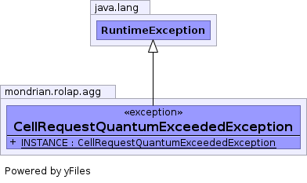

public final class CellRequestQuantumExceededException extends RuntimeException
Not really an exception, just a way of aborting a process so that we can
do some work and restart the process. Any code that handles this exception
is typically in a loop that calls RolapResult.phase().
There are several advantages to this:

| Modifier and Type | Field and Description |
|---|---|
static CellRequestQuantumExceededException |
INSTANCE |
addSuppressed, fillInStackTrace, getCause, getLocalizedMessage, getMessage, getStackTrace, getSuppressed, initCause, printStackTrace, printStackTrace, printStackTrace, setStackTrace, toStringpublic static final CellRequestQuantumExceededException INSTANCE